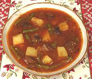

|
Goulash SoupGermany - Gulaschsuppe | ||||
| Serves: Effort: Sched: DoAhead: |
6 main *** 3-1/2 hrs Yes |
Very popular in Germany during the winter, almost every Ratskeller and Gasthof having a pot simmering on the back burner. It is substantial enough to be a main dish. | |||
|
2 20 2 2 1 2 1 1/2 4 2 2 1 3 1/2 |
# oz cl T T T t t c c # # T t |
Beef Chuck (1) Onion Garlic Bacon Fat (2) Butter Paprika (3) Thyme, dry Caraway seeds Water Beef stock Potatoes, waxy Green Beans Tomato Paste Salt |
This is a great buffet party dish, and you'll need at least a 5-quart pot for the recipe. Recipes vary, see Note-4. Make: - (3-1/2 hrs - 1-1/4 hrs work)
|